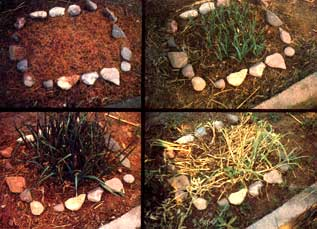

I never did have any luck trying to raise garlic. Never, that is, until I accidentally stumbled onto the "Ultimate Garlic-Growing Secret": Treat 'em like daffodils and plant 'em in the fall! That way, the plants can start sproutin' very early the following spring (exactly the way that crocuses and daffodils do), grow rapidly during the still-cool days which follow, and "set" their bulbs long before the hot days of summer that can be so wiltingly hard on "regular" spring-planted garlic.
Yeah, I know. Most of the gardening books tell you to plant garlic in the spring . . . and to space the bulbs three inches from each other in rows laid out 12 inches apart. I also know what always happened to my crop when I followed that advice:
The garlic would grow fine during the remaining days of spring . . but then the inevitable hot, dry New Mexico summers that my vegetable patch has to contend with would hit the plants like a blast furnace. By the time fall rolled around, all I'd have to show for my efforts would be a few shriveled bulbs that measured about half the size of the "store-bought" kind. And, as you know . . . being outdone by the local supermarket riles the heart of any gardener!
And so I proceeded through life . . . riled year after year by one stunted crop of garlic after another. And then-one fall-I accidentally missed a bulb as I was digging up what little garlic had managed to make it through the summer. And that single, solitary bulb . . . just sat out there in the garden through the following winter . . . . like a smug little time bomb . . . . waiting for a new growing season. Little was I to know (at the time, anyway) the fortunate consequences of that accident.
It wasn't until the following spring-about the time the daffodils started sprouting-that I noticed a small, suspicious clump of green shoots out in the middle of the vegetable patch. "What the dickens are you doing here?" I asked. Naturally enough, the clump didn't answer . . . but I swear it had a sly smile on its little green face.
My first impulse, of course, was to rip out the offending sprouts, since they quite obviously were going to do nothing but get in the way of my other gardening operations. Then curiosity got the best of me (I knew the foliage was garlic, but I didn't know how well it would grow), and I ended up working around it.
As you may have suspected, I was dead certain that the tight bunch of garlic would never amount to anything. I mean: How could nine or ten cloves all crowded together like that ever find the elbow room they'd need to form fullsized bulbs? Ridiculous! I was sure that when I dug the clump up, I'd find nothing but a handful of the scrawniest little garlic bulbs I'd ever laid my eyes on.
Imagine my surprise, then, when I excavated the "mistake" . . . and discovered that each clove in the original "lost" bulb had formed a FULL-SIZED bulb of its own! "Hey! Maybe I'm on to something!" I thought, as visions of gigantic garlic pizzas danced through my head.
The following November 9 (as soon as I was sure the temperature would stay below freezing every night-so the cloves wouldn't sprout prematurely-but before the earth froze solid) I put a somewhat more systematic autumnplanted garlic patch in the ground.
First, I used a spade to dig up an area about one foot square (this took approximately 20 seconds). Then I worked in plenty of compost to make a mellow growing "bed". After that I stuck whole, fat cloves of garlic-spaced two inches apart each way-into the loose soil and covered them with about an inch of dirt. And finally, I spread a little mulch over the bed and edged it with rocks so I wouldn't forget and accidentally tromp on it during the winter.
The first foolhardy shoots from the planting appeared two and a half months later (on January 23) after two consecutive days which were so rainy that the ground began to thaw. Personally, I was convinced the cold winter air would soon do the tender little sprouts in . . . but they seemed to have their own ideas. By the first of February it was apparent that the tiny plants very definitely were serious about poking their heads up through the mulch which covered them. And, since the daffodils had come up by then too, I figured the shoots knew what they were doing and left them alone.
The garlic's tops grew slowly until early April. Then, as the nights turned warmer, the foliage quickly doubled in size. Almost immediately, bulbs began to form on the garlic's roots . . , and, by the first of June (when those bulbs were nearly as large as they were to get), the leaves had already started to dry out and yellow.
I harvested those bulbs in mid-June (when the spring-planted garlic in nearby gardens had barely gotten off to a start), and was I ever pleased with the results! Each individual clove was as big as any you'll ever find in a supermarket. Take that, Piggly Wiggly!
Needless to say, I've stuck with my "mistake" ever since ... and I've always gotten outstanding results. So, garlic lovers and gardeners everywhere: Plant your crop in the fall this time. And, next June, just see if you don't agree with me that autumn-planted garlic is the best and the most successful garlic of all!
|
 LEFT: The original ""mistake"" that started it all. TOP, CENTER: The first ""real"" fall planting of garlic didn't look like much, until . . . TOP, RIGHT: . . . the first of April, when it really began to ""take off'. ABOVE, CENTER: By May 1, the patch's growth had become luxurious, and . . . ABOVE, RIGHT: . . . the garlic was ready to harvest in mid-June. |
|
|